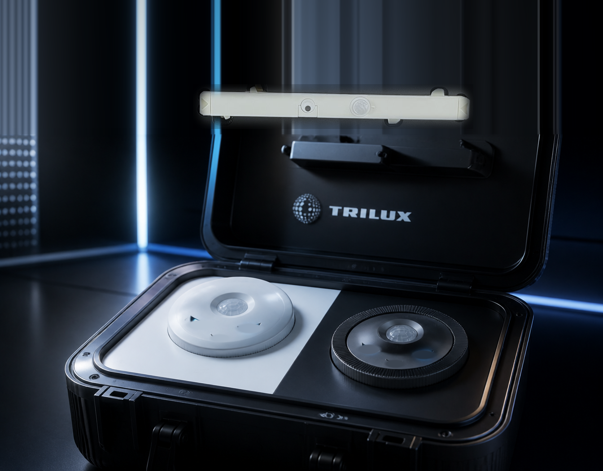
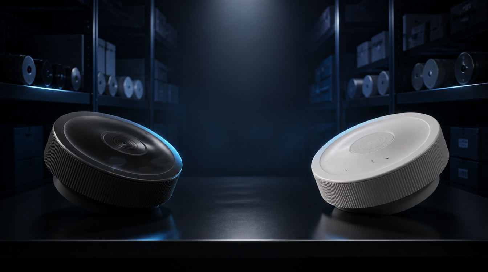

IntuSens DALI-2 Broadcast · bediening


Switch
00
Broadcast
00
Switch vs Broadcast
RACE NAAR 50
Welk product is als eerste vijftig keer verkocht?
En voor jou
VERKOOP 50 LOSSE SENSOREN
voor de grijpvoorraad van installateurs.
Verdeeld over meerdere installateurs telt ook.
Dan ligt er voor jou ook iets te grijpen.
Verdeeld over meerdere installateurs telt ook.
Dan ligt er voor jou ook iets te grijpen.
Projectorders tellen niet mee
intusens-demokoffer.nl